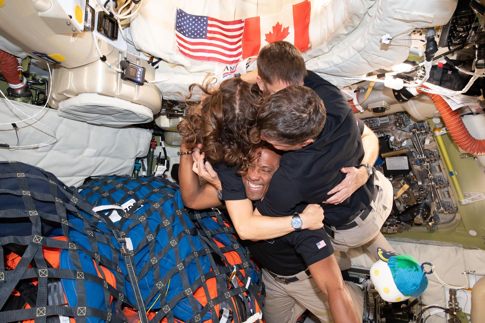
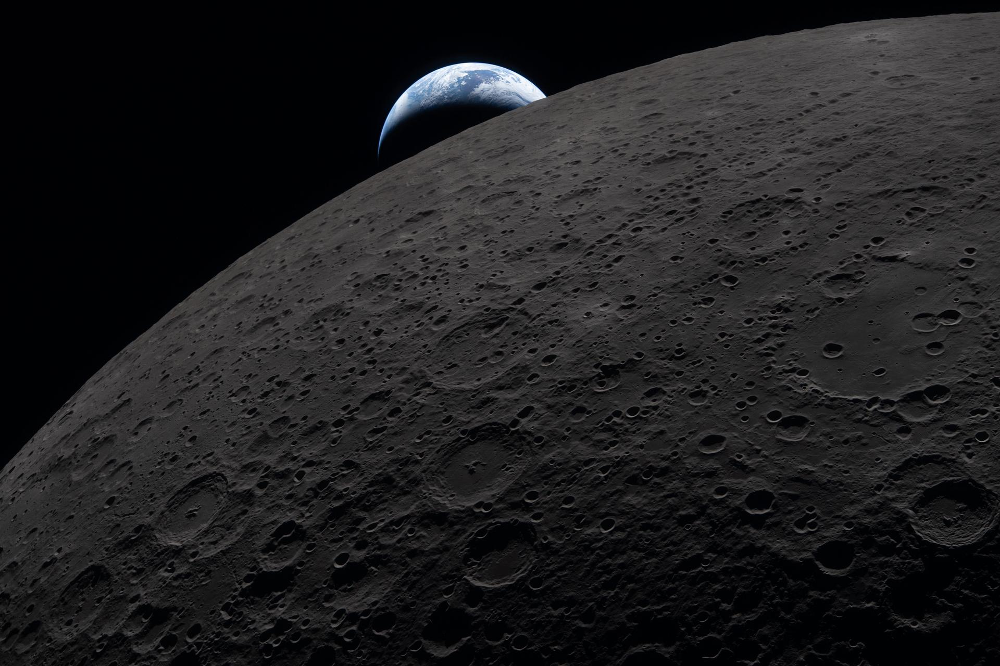
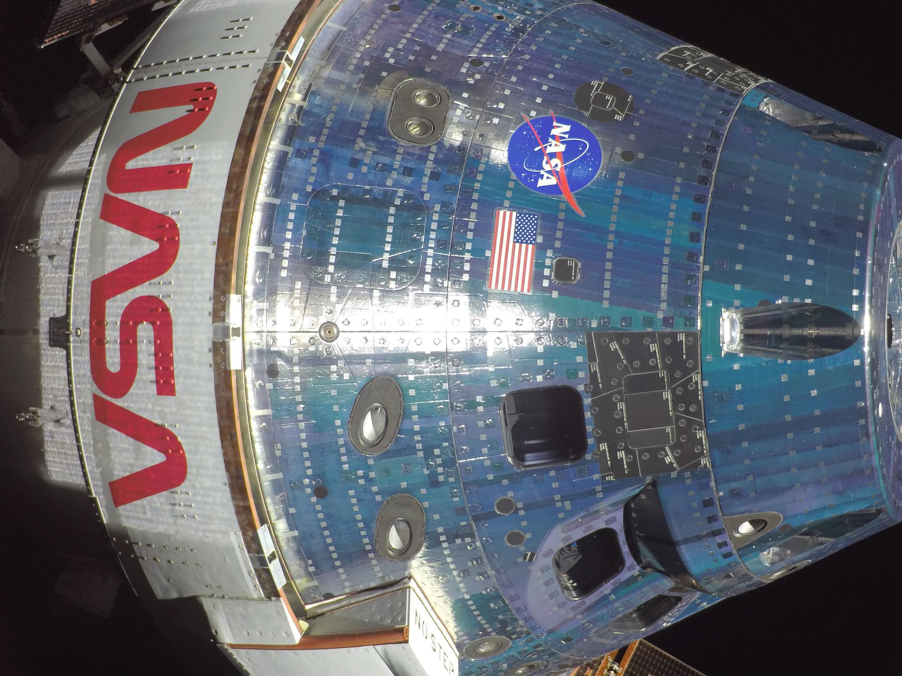

| Home | History | Canada's Role | Space Pics | References |
THE GALLERY / 04
Space Pics
Three remarkable NASA photographs: one person, one place, and one thing.
| 01 |  | PEOPLE WHO MADE HISTORY PersonThe Artemis II crewNASA astronauts Reid Wiseman, Victor Glover and Christina Koch, together with Canadian Space Agency astronaut Jeremy Hansen, made up the Artemis II crew. They journeyed around the Moon aboard Orion in April 2026, testing spacecraft systems and advancing preparation for future lunar exploration. This photograph captures the crew embracing during the mission. PHOTO: NASA / ARTEMIS II |
| 02 |  | A NEW VIEW OF HOME PlaceEarthset beyond the MoonThis image shows Earth appearing to sink behind the Moon's cratered far-side horizon. Astronauts aboard Orion photographed this moment on April 6, 2026, during the Artemis II lunar flyby. The crescent Earth, with blue oceans and white clouds, highlights how distant our home planet appears from deep space. PHOTO: NASA / APRIL 6, 2026 |
| 03 |  | THE SPACECRAFT ThingOrion crew capsuleOrion is the spacecraft that carried the four Artemis II astronauts around the Moon and safely back to Earth. Its crew module includes the systems needed to support astronauts during a deep-space journey and protect them during return through Earth's atmosphere. A camera attached to the spacecraft captured this close view of the capsule during the mission. PHOTO: NASA / ARTEMIS II |
More to explore: NASA's official image collection ↗
| MOON MISSION ARTEMIS II / 2026 | Back to Top ↑ | Image credits |